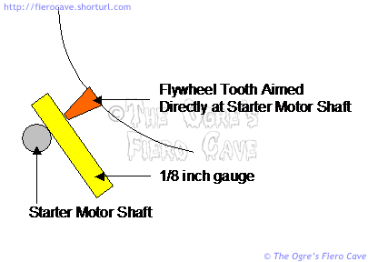
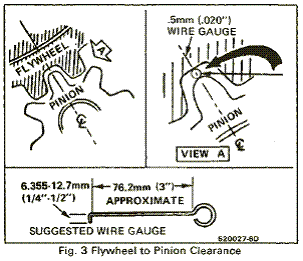

Go Home
Site Map
Go Home
Site Map
Starter
Note: Per GM (Multiple Doc) Never operate the starter more than 30 second at a time without pausing to allow it to cool for at least two minutes. Overheating, cause by excessive cranking, will seriously damage the starter.
Shim Setup
Warning: Some starter's uses a shim and some do not.
Warning: Some new/upgraded starters have bigger shafts. This method was writen for older units w/o gear drive. Not sure? Then use GM method if starter doesn't includes right gauge.
Why or needs a shim...
Shimming is to address "Tolerance stacking" (Google that...) Starter, engine, flywheel as have +/- tolerance. Sometime all are on plus, all minus, but most are a mix.
If you use a shim, Do Not assumes that the old starter's shim setup is not automatically uses by the new starter or when Flywheel is switch/replace.
Example:
Old starter = 1 shim
New starter = no shim, 1/2 shim, or 1 1/2 shim, etc.
If engine have a Shim now then you can start with that but Always use a gauge to test clearance.
Shim use
The correct starter clearance for traditional "2 bolt" GM starters is 1/8 inch between the starter motor shaft and a flywheel tooth pointing directly at the starter shaft. (Rotate the flywheel as needed to make that happen.) This method is recommend by starter marker/rebuilder.
You check the clearance with a section of 1/8-inch wire or a drill bit. (Drill bit must not be chuck chewed from being run loose)

To increase starter clearance, insert a whole shim between the starter and engine.
To decrease starter clearance, cut a shim in half and place the half shim on the outboard bolt.
Shims for GM starters are standard items available at most parts stores.
For a more detailed explanation, go here -> Marine Mechanic
GM method
From GM 88 Fiero SM, Section 6D2, Starter Noise... (Any SM is same. Shim and how it's use doesn’t change.)
Disconnect negative battery cable to prevent cranking of engine.
Check pinion to flywheel clearance, as shown in Fig. 3, by using a wire gage of .5 mm (.020 in) minimum thickness (or diameter). Center a pinion tooth between two flywheel teeth and gage, as shown in Fig. 3. Do not gage in the corners, where a misleading larger dimension may be observed. [Orge add Italics, See Note] If the clearance is under this minimum, shimming the starter away from the flywheel is required.
If the clearance is grossly over .5 mm (.020 in) in the vicinity of 1.5 mm (.060 in) or more, shimming the starter toward the flywheel is required. (This is generally the problem causing broken flywheel teeth or starter housing.) Shimming the starter toward the flywheel can be accomplished by shimming only the outboard starter mounting pad. A shim of .4 mm (.015 in) thickness, at this location will decrease the clearance by approximately .3 mm (.010 in).
Note: Unless you are an octopus, this is very easy to screw it up. Please use the other method instead.
Starter Upgrade
Try here. Good upgrade for all Fiero OE engine Is for V6 but Should work on L4 and engine swaps.